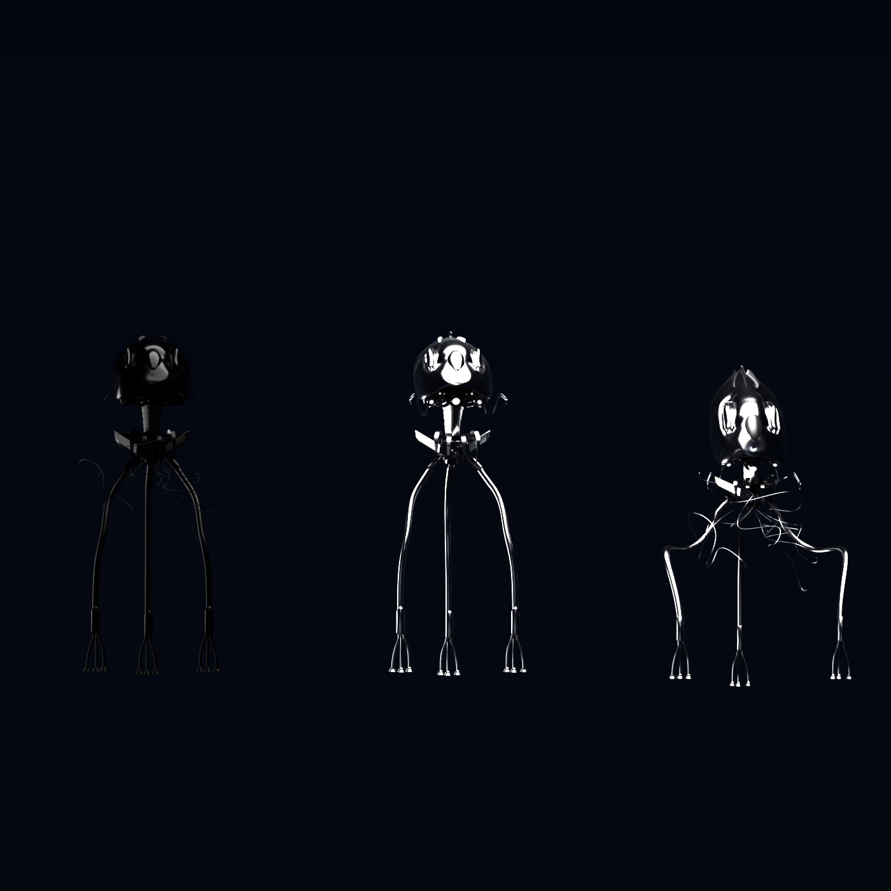

"Tripods"
8.1.20
War Of The Worlds was one of my favorite films growing up, mostly because of the creativity people in the alien machines. This project took 5 days to compelete, this was because the save file suddenly deleted which caused me to lose two days of work. After this happened I spent an entire day contemplating on stopping and thinking of trying another project because of the time, but I decided that the next day I'd spend the entire day and night redoing the whole project. I felt like a zombie after the project was done but this is why I enjoyed making it I was able to push myself harder to see the outcome I wanted.